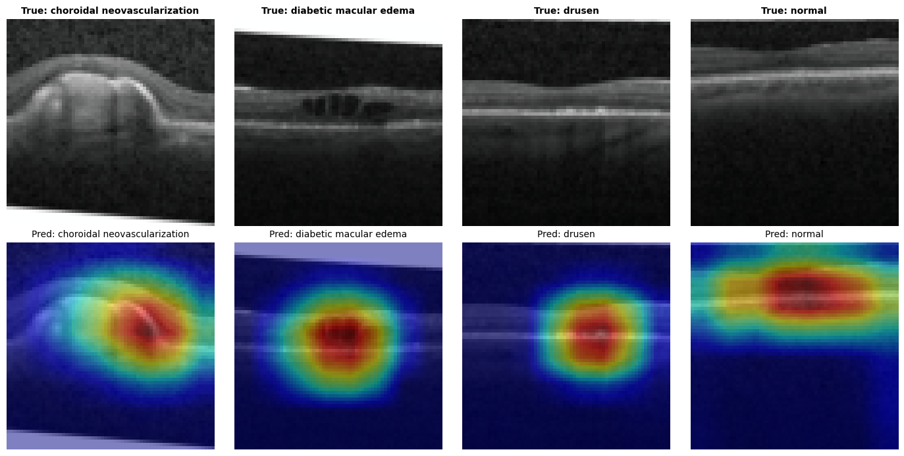
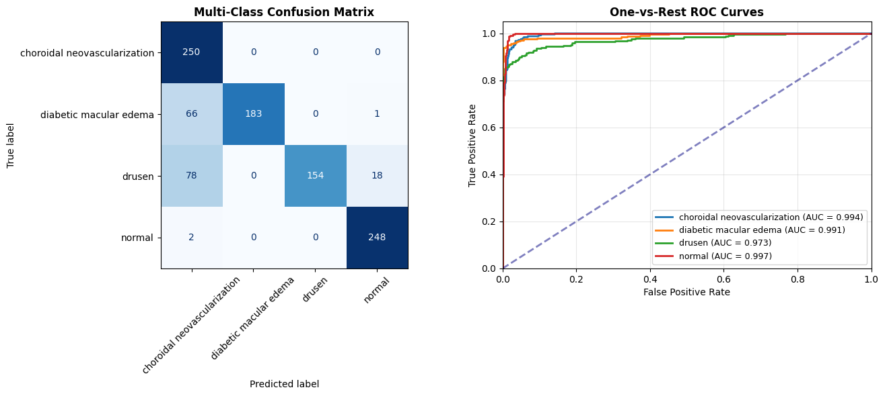
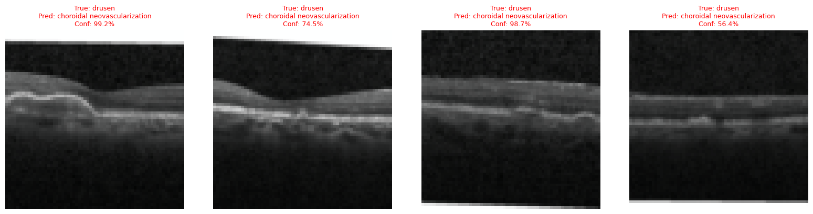
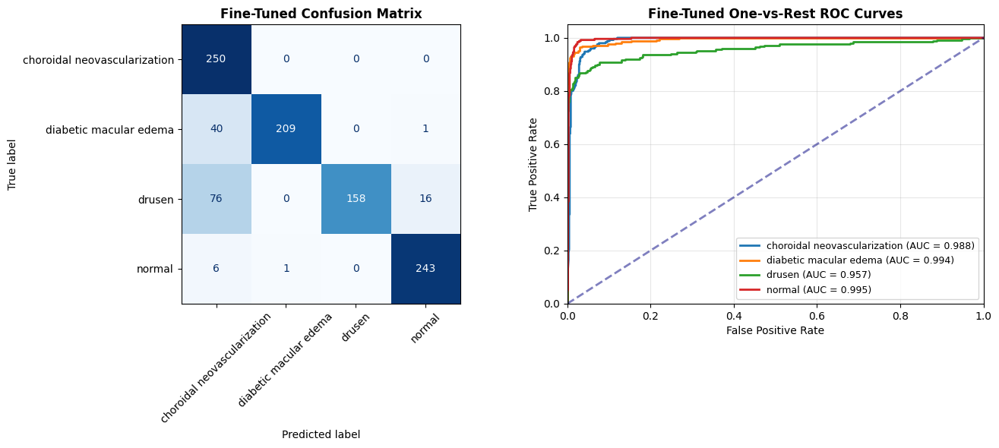

Tutorial
Open in GitHub Open in Google ColabStep 1: Install the medmnist package and import dependencies
The MedMNIST package contains the image set we will use, and PyTorch has the core tools we need to process images and train our model.
Collapse/Open Code
!pip install medmnist
import torch
import torch.nn as nn
import torch.optim as optim
from torch.utils.data import DataLoader
import torchvision.transforms as transforms
import torchvision.models as models
import medmnist
from medmnist import INFO, Evaluator
import numpy as np
Step 2: Load and transform datasets
Set up the 64x64 OCTMNIST data by converting our grayscale scans into three-channel tensors and normalize them to match the data that ResNet was trained on. Then, download the dataset splits and wraps them in PyTorch dataloaders so we can easily feed our images into the model in batches.
Collapse/Open Code
# Setup Data Parameters for OCTMNIST at 64x64 resolution
data_flag = 'octmnist'
info = INFO[data_flag]
task = info['task'] # 'multi-class'
n_classes = len(info['label'])
DataClass = getattr(medmnist, info['python_class'])
print(f"Dataset: {data_flag.upper()} | Task: {task} | Classes: {n_classes}")
# Clean Transform Pipeline
# standardizes image pixel values so they match the distribution that the pretrained model was originally trained on
transform = transforms.Compose([
transforms.Grayscale(num_output_channels=3), # Map 1-channel to 3-channel for ResNet
transforms.ToTensor(),
transforms.Normalize(mean=[0.485, 0.456, 0.406], std=[0.229, 0.224, 0.225])
])
# Load Datasets & Dataloaders (using size=64 for faster download & training)
train_dataset = DataClass(split='train', transform=transform, download=True, size=64)
test_dataset = DataClass(split='test', transform=transform, download=True, size=64)
train_loader = DataLoader(train_dataset, batch_size=64, shuffle=True, num_workers=2)
test_loader = DataLoader(test_dataset, batch_size=64, shuffle=False, num_workers=2)
Step 3: Load and configure Resnet model
Load a pretrained ResNet-18 model. ResNet-18's first convolutional layer is a 7x7 convolution with stride=2 and padding=3. Let's use a smaller 3x3 convolution with stride=1 and padding=1, and remove the maxpool layer so it can handle our smaller 64x64 images. We also update the final layer for our four classification categories. Then, we configure our loss function and optimizer so the network is fully prepped and ready to train.
Collapse/Open Code
# Configure Pretrained ResNet-18 Model
device = torch.device("cuda" if torch.cuda.is_available() else "cpu")
print(f"Using device: {device}")
model = models.resnet18(weights=models.ResNet18_Weights.DEFAULT)
# 64x64 Input - change first layer to 3x3 convolution with padding=1
model.conv1 = nn.Conv2d(3, 64, kernel_size=3, stride=1, padding=1, bias=False)
model.maxpool = nn.Identity()
# Adjust final layer for 4 classes
model.fc = nn.Linear(model.fc.in_features, n_classes)
model = model.to(device)
# Loss and Optimizer
criterion = nn.CrossEntropyLoss()
optimizer = optim.Adam(model.parameters(), lr=0.0001)
Step 4: Run the training loop
Run the training loop for 3 epochs.
Collapse/Open Code
# Training Loop
num_epochs = 3
for epoch in range(num_epochs):
model.train()
running_loss = 0.0
correct = 0
total = 0
for batch_idx, (images, labels) in enumerate(train_loader):
images, labels = images.to(device), labels.to(device)
labels = labels.squeeze(1).long() # Flatten label tensor for CrossEntropyLoss
optimizer.zero_grad()
outputs = model(images)
loss = criterion(outputs, labels)
loss.backward()
optimizer.step()
running_loss += loss.item() * images.size(0)
_, predicted = outputs.max(1)
total += labels.size(0)
correct += predicted.eq(labels).sum().item()
epoch_loss = running_loss / total
epoch_acc = correct / total
print(f"Epoch [{epoch+1}/{num_epochs}] | Train Loss: {epoch_loss:.4f} | Train Acc: {epoch_acc:.4f}")
After 3 epochs, I get a training loss of 0.0729 and a training accuracy of 0.9756
Step 5: Evaluate the model on the test set
Now let's check the test set. Accuracy measures the proportion of correct predictions out of all test samples. Multi-class AUC uses a One-vs-Rest (OvR) approach, averaging the ROC AUC score across all classes.
Collapse/Open Code
# Evaluation Loop & MedMNIST Evaluator
model.eval()
test_evaluator = Evaluator(data_flag, 'test',size=64)
y_true = []
y_score = []
with torch.no_grad():
for images, labels in test_loader:
images = images.to(device)
outputs = model(images)
outputs = torch.softmax(outputs, dim=1) # Convert logits to probabilities
y_true.append(labels.numpy())
y_score.append(outputs.cpu().numpy())
y_true = np.concatenate(y_true, axis=0)
y_score = np.concatenate(y_score, axis=0)
metrics = test_evaluator.evaluate(y_score)
print(f"\n--- Final Test Results ---")
print(f"Multi-class AUC: {metrics[0]:.4f}")
print(f"Accuracy: {metrics[1]:.4f}")
My results are: Multi-class AUC=0.9888 and accuracy=0.8350
Implement Grad-CAM
Let's set up Grad-CAM to ensure the model is looking at the right areas of each image and not a label or artifact. This hooks into the model's final convolutional layer to capture gradients and feature maps as images flow through. Then, it turns those gradients into a visual heatmap overlay, letting us verify that our network is actually focusing on the right target features.
Collapse/Open Code
import torch.nn.functional as F
import matplotlib.pyplot as plt
# Automatically find one sample index for each unique class in the test dataset
class_samples = {}
for idx in range(len(test_dataset)):
_, label = test_dataset[idx]
class_id = int(label.item()) if hasattr(label, 'item') else int(label[0])
if class_id not in class_samples:
class_samples[class_id] = idx
if len(class_samples) == n_classes: # Stops once we have all 4 classes
break
print(f"Found samples for categories: {list(class_samples.keys())}")
# Setup Grad-CAM
target_layer = model.layer4[-1]
grad_cam = GradCAM(model, target_layer)
class_names = info['label']
# Sort categories numerically (0, 1, 2, 3)
sorted_classes = sorted(class_samples.keys())
fig, axes = plt.subplots(2, len(sorted_classes), figsize=(14, 7))
mean = np.array([0.485, 0.456, 0.406])
std = np.array([0.229, 0.224, 0.225])
# Loop through each category representative and plot
for i, class_id in enumerate(sorted_classes):
idx = class_samples[class_id]
image_tensor, label = test_dataset[idx]
input_tensor = image_tensor.unsqueeze(0).to(device)
# Generate heatmap
heatmap, pred_class = grad_cam(input_tensor)
# Un-normalize image for plotting
img_np = image_tensor.permute(1, 2, 0).cpu().numpy()
img_np = std * img_np + mean
img_np = np.clip(img_np, 0, 1)
# Get human-readable label names from MedMNIST info dict
true_lbl_name = class_names[str(class_id)] if str(class_id) in class_names else str(class_id)
pred_lbl_name = class_names[str(pred_class)] if str(pred_class) in class_names else str(pred_class)
# Plot Original Scan (Top Row)
axes[0, i].imshow(img_np)
axes[0, i].set_title(f"True: {true_lbl_name}", fontsize=10, fontweight='bold')
axes[0, i].axis('off')
# Plot Heatmap Overlay (Bottom Row)
axes[1, i].imshow(img_np)
heatmap_resized = F.interpolate(
torch.tensor(heatmap).unsqueeze(0).unsqueeze(0),
size=(64, 64),
mode='bilinear',
align_corners=False
).squeeze().numpy()
axes[1, i].imshow(heatmap_resized, cmap='jet', alpha=0.5)
axes[1, i].set_title(f"Pred: {pred_lbl_name}", fontsize=10)
axes[1, i].axis('off')
plt.tight_layout()
plt.show()
The heat map shows that the model is indeed learning from relevant features of the images.

Step 6: Compute per-class metrics
We compute a confusion matrix and calculate per-class sensitivity and specificity so we can see how well our model performs on each individual category. Then, we plot a side-by-side visual breakdown showing the confusion matrix alongside One-vs-Rest ROC curves for a complete performance review.
Collapse/Open Code
from sklearn.metrics import confusion_matrix, ConfusionMatrixDisplay, roc_curve, auc
from sklearn.preprocessing import label_binarize
# Ensure predictions and true labels are ready
y_true_flat = y_true.squeeze()
y_pred_flat = y_score.argmax(axis=1)
class_names = [info['label'][str(i)] if str(i) in info['label'] else f"Class {i}" for i in range(n_classes)]
# Compute Confusion Matrix & Per-Class Metrics
cm = confusion_matrix(y_true_flat, y_pred_flat)
print("--- Per-Class Performance Metrics ---")
for i in range(n_classes):
tp = cm[i, i]
fn = cm[i, :].sum() - tp
fp = cm[:, i].sum() - tp
tn = cm.sum() - (tp + fn + fp)
sensitivity = tp / (tp + fn) if (tp + fn) > 0 else 0.0
specificity = tn / (tn + fp) if (tn + fp) > 0 else 0.0
print(f"[{class_names[i]}]")
print(f" Sensitivity (Recall): {sensitivity:.4f}")
print(f" Specificity: {specificity:.4f}")
# Setup Plotting for Confusion Matrix & ROC Curves
fig, axes = plt.subplots(1, 2, figsize=(14, 6))
# Plot A: Confusion Matrix
disp = ConfusionMatrixDisplay(confusion_matrix=cm, display_labels=class_names)
disp.plot(ax=axes[0], cmap='Blues', values_format='d', colorbar=False)
axes[0].set_title("Multi-Class Confusion Matrix", fontsize=12, fontweight='bold')
axes[0].tick_params(axis='x', rotation=45)
# Plot B: One-vs-Rest ROC Curves
# Binarize true labels for multi-class ROC calculation
y_true_bin = label_binarize(y_true_flat, classes=range(n_classes))
for i in range(n_classes):
fpr, tpr, _ = roc_curve(y_true_bin[:, i], y_score[:, i])
roc_auc = auc(fpr, tpr)
axes[1].plot(fpr, tpr, lw=2, label=f"{class_names[i]} (AUC = {roc_auc:.3f})")
axes[1].plot([0, 1], [0, 1], color='navy', lw=2, linestyle='--', alpha=0.5)
axes[1].set_xlim([0.0, 1.0])
axes[1].set_ylim([0.0, 1.05])
axes[1].set_xlabel('False Positive Rate', fontsize=10)
axes[1].set_ylabel('True Positive Rate', fontsize=10)
axes[1].set_title('One-vs-Rest ROC Curves', fontsize=12, fontweight='bold')
axes[1].legend(loc="lower right", fontsize=9)
axes[1].grid(alpha=0.3)
plt.tight_layout()
plt.show()
These are my per-class performance metrics:
- Choroidal Neovascularization (CNV)
- Sensitivity (100%) - The model caught every true CNV case in the test set.
- Specificity (80.5%) - "False alarms", occasionally mislabels other conditions as CNV.
- Diabetic Macular Edema (DME)
- Sensitivity (73.2%) - Misses about 1 in 4 true DME cases, incorrectly flagging them as something else.
- Specificity (100%) - No false positives, never labels something else as DME.
- Drusen
- Sensitivity (61.6%) - The model struggles the most here, missing nearly 40% of actual Drusen cases.
- Specificity (100%) - No false positives for Drusen.
- Normal Scans
- Sensitivity (99.2%) & Specificity (97.5%) - The model is good at separating healthy retinal scans from pathological ones.

Step 7: Visualize misclassified samples
Let's look at some examples of which images are being misclassified.
Collapse/Open Code
# Find all test indices where the model prediction differed from the true label
y_true_flat = y_true.squeeze()
y_pred_flat = y_score.argmax(axis=1)
error_indices = np.where(y_pred_flat != y_true_flat)[0]
print(f"Total misclassifications found in test set: {len(error_indices)}")
# Map category indices to human-readable names
class_names = [info['label'][str(i)] if str(i) in info['label'] else f"Class {i}" for i in range(n_classes)]
# Select errors specifically involving Drusen (Class 2) or DME (Class 1), or fallback to any error
target_error_indices = [idx for idx in error_indices if y_true_flat[idx] in [1, 2]]
if len(target_error_indices) == 0:
target_error_indices = error_indices # Fallback to any error if no DME/Drusen errors found
# Plot up to 4 misclassified samples side-by-side
num_to_plot = min(4, len(target_error_indices))
fig, axes = plt.subplots(1, num_to_plot, figsize=(4 * num_to_plot, 4))
if num_to_plot == 1:
axes = [axes]
mean = np.array([0.485, 0.456, 0.406])
std = np.array([0.229, 0.224, 0.225])
for i in range(num_to_plot):
idx = target_error_indices[i]
image_tensor, _ = test_dataset[idx]
true_cls = int(y_true_flat[idx])
pred_cls = int(y_pred_flat[idx])
confidence = y_score[idx, pred_cls] * 100
# Un-normalize image for plotting
img_np = image_tensor.permute(1, 2, 0).cpu().numpy()
img_np = std * img_np + mean
img_np = np.clip(img_np, 0, 1)
axes[i].imshow(img_np)
axes[i].set_title(
f"True: {class_names[true_cls]}\nPred: {class_names[pred_cls]}\nConf: {confidence:.1f}%",
fontsize=9,
color='red'
)
axes[i].axis('off')
plt.tight_layout()
plt.show()Here are 4 of my misclassified images. These are all drusen that the model labeled as CNV.

Step 8: Apply class weights and fine tune
Let's try to improve our results using our low resolution images. To improve classification, especially for Drusen and CNV:
- Apply class weights (Weighted Cross-Entropy): Drusen has a lower recall, so we can penalize the model more heavily whenever it messes up a Drusen case by passing class weights into the loss function.
- Train last layers for Fine-Tuning: Let's just train the final residual block (layer4) along with the fully connected layer and train for a few more epochs with a very small learning rate.
Collapse/Open Code
from sklearn.utils.class_weight import compute_class_weight
# Compute Class Weights from Training Set to penalize missed Drusen/DME
train_labels = []
for _, label in train_dataset:
lbl_val = int(label.item()) if hasattr(label, 'item') else int(label[0])
train_labels.append(lbl_val)
computed_weights = compute_class_weight(
class_weight='balanced',
classes=np.unique(train_labels),
y=train_labels
)
class_weights_tensor = torch.tensor(computed_weights, dtype=torch.float).to(device)
print("Updated Class Weights for Loss Function:", class_weights_tensor)
# Unfreeze Layer 4 and Fully Connected Layer for Fine-Tuning
for param in model.parameters():
param.requires_grad = False # Freeze all base layers
for param in model.layer4.parameters():
param.requires_grad = True # Unfreeze final residual block
for param in model.fc.parameters():
param.requires_grad = True # Unfreeze classifier
# Configure Weighted Loss and a Smaller Learning Rate
criterion = nn.CrossEntropyLoss(weight=class_weights_tensor)
optimizer = optim.Adam(filter(lambda p: p.requires_grad, model.parameters()), lr=0.00001)
# Fine-Tuning Epochs Loop
fine_tune_epochs = 5
print(f"\n--- Starting Fine-Tuning ({fine_tune_epochs} Epochs) ---")
for epoch in range(fine_tune_epochs):
model.train()
running_loss = 0.0
correct = 0
total = 0
for batch_idx, (images, labels) in enumerate(train_loader):
images, labels = images.to(device), labels.to(device)
labels = labels.squeeze(1).long()
optimizer.zero_grad()
outputs = model(images)
loss = criterion(outputs, labels)
loss.backward()
optimizer.step()
running_loss += loss.item() * images.size(0)
_, predicted = outputs.max(1)
total += labels.size(0)
correct += predicted.eq(labels).sum().item()
epoch_loss = running_loss / total
epoch_acc = correct / total
print(f"Fine-Tune Epoch [{epoch+1}/{fine_tune_epochs}] | Loss: {epoch_loss:.4f} | Acc: {epoch_acc:.4f}")
# Re-evaluate on Test Set to check sensitivity improvements
model.eval()
y_true_ft = []
y_score_ft = []
with torch.no_grad():
for images, labels in test_loader:
images = images.to(device)
outputs = model(images)
outputs = torch.softmax(outputs, dim=1)
y_true_ft.append(labels.numpy())
y_score_ft.append(outputs.cpu().numpy())
y_true_ft = np.concatenate(y_true_ft, axis=0)
y_score_ft = np.concatenate(y_score_ft, axis=0)
metrics_ft = test_evaluator.evaluate(y_score_ft)
print(f"\n--- Post-Fine-Tuning Test Results ---")
print(f"Multi-class AUC: {metrics_ft[0]:.4f}")
print(f"Accuracy: {metrics_ft[1]:.4f}")
My multi-class AUC is 0.9835 and Accuracy is 0.8600. Let's check the per-class metrics.
Step 9: Per-class metrics after fine-tuning
Look at the same metrics as before.
Collapse/Open Code
# Use the fine-tuned predictions (y_true_ft and y_score_ft)
y_true_flat = y_true_ft.squeeze()
y_pred_flat = y_score_ft.argmax(axis=1)
class_names = [info['label'][str(i)] if str(i) in info['label'] else f"Class {i}" for i in range(n_classes)]
# Compute Confusion Matrix & Per-Class Metrics
cm = confusion_matrix(y_true_flat, y_pred_flat)
print("--- Post-Fine-Tuning Per-Class Performance Metrics ---")
for i in range(n_classes):
tp = cm[i, i]
fn = cm[i, :].sum() - tp
fp = cm[:, i].sum() - tp
tn = cm.sum() - (tp + fn + fp)
sensitivity = tp / (tp + fn) if (tp + fn) > 0 else 0.0
specificity = tn / (tn + fp) if (tn + fp) > 0 else 0.0
print(f"[{class_names[i]}]")
print(f" Sensitivity (Recall): {sensitivity:.4f}")
print(f" Specificity: {specificity:.4f}")
# Setup Plotting for Confusion Matrix & ROC Curves
fig, axes = plt.subplots(1, 2, figsize=(14, 6))
# Plot A: Confusion Matrix
disp = ConfusionMatrixDisplay(confusion_matrix=cm, display_labels=class_names)
disp.plot(ax=axes[0], cmap='Blues', values_format='d', colorbar=False)
axes[0].set_title("Fine-Tuned Confusion Matrix", fontsize=12, fontweight='bold')
axes[0].tick_params(axis='x', rotation=45)
# Plot B: One-vs-Rest ROC Curves
y_true_bin = label_binarize(y_true_flat, classes=range(n_classes))
for i in range(n_classes):
fpr, tpr, _ = roc_curve(y_true_bin[:, i], y_score_ft[:, i])
roc_auc = auc(fpr, tpr)
axes[1].plot(fpr, tpr, lw=2, label=f"{class_names[i]} (AUC = {roc_auc:.3f})")
axes[1].plot([0, 1], [0, 1], color='navy', lw=2, linestyle='--', alpha=0.5)
axes[1].set_xlim([0.0, 1.0])
axes[1].set_ylim([0.0, 1.05])
axes[1].set_xlabel('False Positive Rate', fontsize=10)
axes[1].set_ylabel('True Positive Rate', fontsize=10)
axes[1].set_title('Fine-Tuned One-vs-Rest ROC Curves', fontsize=12, fontweight='bold')
axes[1].legend(loc="lower right", fontsize=9)
axes[1].grid(alpha=0.3)
plt.tight_layout()
plt.show()
- Choroidal Neovascularization (CNV): Sensitivity remained at a perfect 100%, while specificity improved from ~80.5% to 83.73%, reflecting a reduction in false-positive errors.
- Diabetic Macular Edema (DME): Experienced the most substantial performance gain, with sensitivity jumping from 73.2% to 83.60% while preserving near-perfect specificity (99.87%).
- Drusen: Showed a modest sensitivity increase from 61.6% to 63.20% while maintaining 100% specificity, underscoring persistent classification difficulty.
- Normal Scans: Sensitivity shifted slightly to 97.20% and specificity improved marginally to 97.73%.

Next Steps
Most of the model's misclassifications were between Drusen and CNV. The model's performance improved after fine-tuning, especially for DME, but Drusen remains a challenging category. We could try to improve results by using higher resolution images or using more advanced architectures. We could also try data augmentation techniques to further enhance classification accuracy.